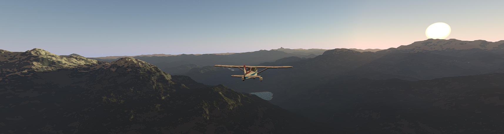

Shadows.
The out of the box shadow system in Godot is a bit limiting, both in the distance they can be visible to and that they don't give you easy access to things such as the shadow maps, which would be great for using in volumetric shadow effects in my atmosphere system. This seemed like a good opportunity for me to have a bash at implementing my own.
Goals and Expectations
Range
So as mentioned the godot shadows that you have easy access through its lighting pipeline have a limit of 8000m (units). In my game I can see easily over 50km from a normal flying level. I really wanted to push it as far as it could go and have shadows the entire camera range (which I currently have at 1 million units.) But this seemed less feasible as I progressed especially while struggling to make sure I didn't sacrifice too much close range quality as well.
Performance
To state the obvious it was important for this solution to be performant, but how performant is a bit more up for question. I didn't want to achieve or outperform godots shadow systems performance. As somebodies first attempt at a shadow system that seems like too lofty a goal, especially as my other requirements go beyond what godot supports. But I wanted it to at least be in the same ballpark.
Making a tool
I didn't want my solution to be something entirely bespoke for my game, but something that could be plugged in and be useful for multiple projects.
bit more of a story line of how i got there, viewports implementation, finding that ineffective etc
more...